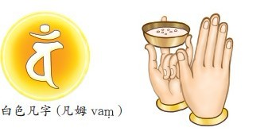
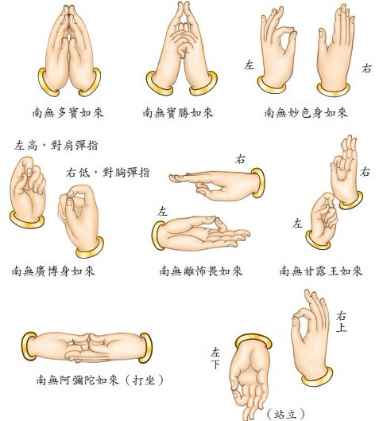
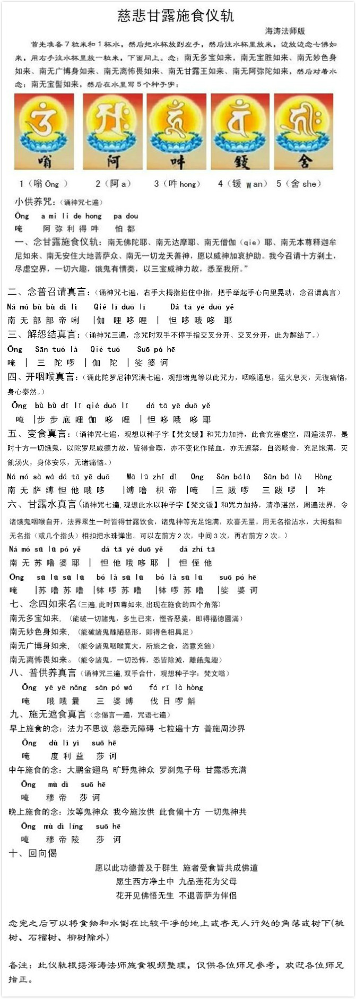

施食的食物可以是粳米大麦饭、饼曲粥或者是最简单的用七粒以上的米加满水就行或者是面条，但不要菜茄。
若有比丘、比丘尼、优婆塞、优婆夷、童男、童女及诸人天，意欲受持此方便法者，应须召请尽十方界，一切六趣，诸饿鬼神众。当作是念：
1、念七佛名号(每念一佛名号，放一粒入施食米于杯中)
南无多宝王如来
南无宝胜王如来
南无妙色身如来
南无广博身如来
南无离怖畏如来
南无甘露王如来
南无阿弥陀如来
+水…南無宝髻如来
在水中寫五个種子字
2、小供养咒
唵wèng阿ā弥mí利lì得˙dē吽hōng怕pà都dōu
供养十方诸佛、菩萨、缘觉、声闻、贤圣僧众（供香、水、果）
印右手：大姆指捻无名指甲，余三指直伸，此即莲花部三股印。诵咒时先覆掌指向供物，自内向外三复再仰掌由外向内三复。印左手：大姆指、食指、小指竖持食盒，中指、无名指屈。观念：仰愿十方三宝，慈悲加持，此水此米，普施法界众生，悉获饱满，同生极乐，共证菩提。

3、南无佛陀耶、南无达摩耶、南无僧伽耶、南无本尊释迦牟尼如来、南无安住大地菩萨众、南无一切龙天善神，愿以威神加哀护助。我今召请十方剎土，尽虚空界，一切六趣，饿鬼有情类，以三宝威神力故，悉至我所。
（念完，面向东方，即诵普召请真言七遍）
4、普召请真言(七遍)
南nan无mo部bu部bu帝di唎li 伽qie哩li哆duo哩li 怛da哆ta哦ye哆duo耶ye
手印：举右手，掌心向外，大拇指压中指的指甲，其余三指伸直。（在此暂且称为：施食印）念咒到要开始念“怛哆誐哆耶”时，（手印维持不变）手逆时针朝内转变成掌心向自己。然后又回到刚才的施食印，掌心向外，念第二遍咒。如此7次。

5、解怨结真言（三遍）
唵ong三san陀tuo啰la 伽qie陀tuo娑suo婆po诃he
手印：十指交叉，右手大拇指压左手大拇指，“娑婆诃”时打开双手，两手同时弹指甩向两边。弹指是大拇指滑过中指食指地打出响指。
行者应当起大悲心而语之言：汝当善听，我今以此陀罗尼开汝咽喉，施汝清凉柔软快乐，欲令汝等自恣饮食甘露美味。
6、开咽喉真言（七遍）
唵ong步bu步bu底di哩li伽qie哆duō哩lī 怛da哆ta哦ye哆duo耶ye
手印：右手举起，拇指+中指捏住，其它手指自然直立念咒到最后，用无名指沾水，大拇指和无名指（或几个指头）相扣把水珠弹出。可以左前方2次，中间3次，再右前方2次。

诵此陀罗尼神咒时，观想诸鬼以此咒力，咽喉通息，猛火息灭，无复痛恼，身心安泰。如施甘露水行者用无明指沾水洒开，令鬼道有情咽喉自开。
7、变食真言（七遍）
南nan无mo萨sa缚wa怛da他ta哦ye哆duo缚wa噜lu枳zhi帝di唵ong三san跋ba啰la 三san跋ba啰la 吽hong（七遍）
手印：左手拿器皿盛乳饭，高过自己的嘴。右手打施食印加持器皿（意谓着比较*近器皿）。念到“吽”时弹指甩出（右手要拉开甩出去）。

观想每一个手指头出现白色的牛奶，香遍虚空。观想此食充塞虚空，周遍法界，是时十方一切饿鬼，以陀罗尼威德力故，皆得食吃，亦不变化作脓血，亦无遮禁，自恣啖食，充足饱满，灭饥汤火，身体安乐，无诸痛恼。
8、甘露水真言（三遍或七遍）
南nan无mo苏su噜lu婆po耶ye怛da他ta哦ye哆duo耶ye怛da侄zhi他ta唵ong苏su噜lu苏su噜lu钵bo啰la苏sū噜lu钵bo啰la苏su噜lu娑suo婆po诃he
手印：妙色身如来手印：右手向上、向前直立左手拿器皿盛乳饭，高过自己的嘴。右手五指并拢手掌掌心向水杯。

诵咒加持并观想，无量甘露美味饮料液体类（可以想象成牛奶，可乐等等）从自己的掌心流出遍满了整个虚空。观想此水咒力加持，清净湛然，周遍法界，令诸饿鬼咽喉自开，法界众生一时皆得甘露饮食，诸鬼神等充足饱满，欢喜无量。
9、普供养真言（三遍）
唵ong 哦ye哦ye曩nang 三san婆po缚wa 伐fa日ri啰la斛hong

10、施无遮食真言（念偈言一遍，咒语七遍）
手印:念偈言一遍，咒语七遍，念咒时，右手伸出，手背向下。咒语念完后拇指捏中指三弹指
如果你是早上施食的念：
法力不思议慈悲无障碍七粒遍十方普施周沙界
唵ong 度du利li益yi莎suo诃he
如果你是中午施食的念：
大鹏金翅鸟旷野鬼神众罗刹鬼子母甘露悉充满
唵ong 穆mu帝di莎suo诃he
如果你是晚上施食的念：
汝等鬼神众我今施汝供此食遍十方一切鬼神共
唵wèng 穆mu帝di陵ling莎suo诃he

11、念七佛名号(每念一佛名号，放一粒入施食米于杯中)
南无多宝王如来
南无宝胜王如来
南无妙色身如来
南无广博身如来
南无离怖畏如来
南无甘露王如来
南无阿弥陀如来

12、回向偈
愿以此功德普及于群生施者受者皆共成佛道
愿生西方净土中九品莲花为父母
花开见佛悟无生不退菩萨为伴侣
12.連唸誦七佛如来名號加手印(三次).

施食功德
一、具足无量功德。
二、寿命延长。
三、成就供养无量如来。
四、颜色鲜洁。
五、强记。
六、夜叉、罗刹、鬼等皆畏。
七、心得清净。
八、证梵天威德。
九、于诸怨敌常得胜。
十、三宝忆念，诸天拥护。